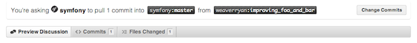

La documentación es tan importante como el código. Esta sigue exactamente los mismos principios: una vez y sólo una, pruebas, facilidad de mantenimiento, extensibilidad, optimización y reconstrucción sólo por nombrar algunos. Y, por supuesto, la documentación tiene errores, errores tipográficos, guías difíciles de leer y mucho más.
Antes de colaborar, necesitas familiarizarte con: el lenguaje de marcado empleado en la documentación.
La documentación de Symfony2 se encuentra alojada en GitHub:
https://github.com/symfony/symfony-docs
Si deseas enviar un parche bifurca el repositorio oficial en GitHub y luego clona tu bifurcación:
$ git clone git://github.com/TUNOMBRE/symfony-docs.git
A menos que estés documentando una nueva característica para Symfony 2.1, todas las solicitudes de atracción se deben basar en la rama 2.0, en lugar de en la rama principal. Para ello activa la rama 2.0 antes del siguiente paso:
$ git checkout 2.0
A continuación, crea una rama dedicada a tus cambios (para mantener la organización):
$ git checkout -b improving_foo_and_bar
Ahora puedes hacer los cambios directamente en esta rama y enviarlos ahí. Cuando hayas terminado, impulsa esta rama a tu GitHub e inicia una petición de atracción. La petición de atracción debe ser entre tu rama mejorando_foo_y_bar y la rama maestra de Symfony-docs.
Si has hecho tus cambios basándote en la rama 2.0, entonces necesitas confirmar el cambio siguiendo el enlace y cambiar la rama base para que sea @2.0:
GitHub aborda el tema de las peticiones de atracción en detalle.
Nota
La documentación de Symfony2 está bajo una licencia Creative Commons Attribution-Share Alike 3.0 Unported Licencia.
La contribución más fácil que puedes hacer es informar algún problema: un error, un error gramatical, un error en el código de ejemplo, una explicación omitida, y así sucesivamente.
Pasos a seguir:
Lee el documento dedicado.